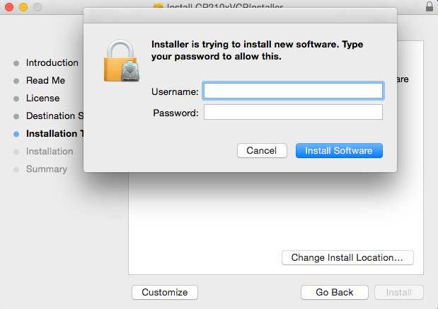
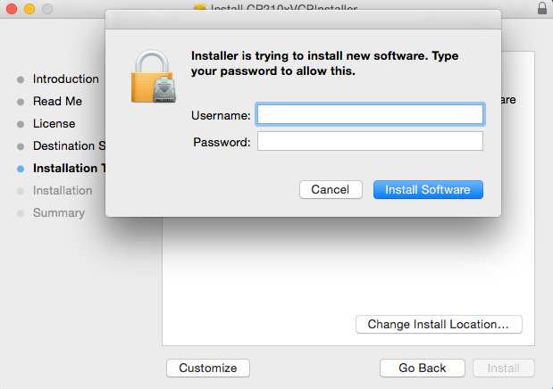
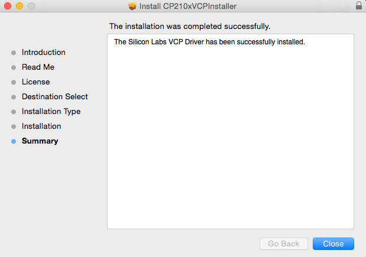
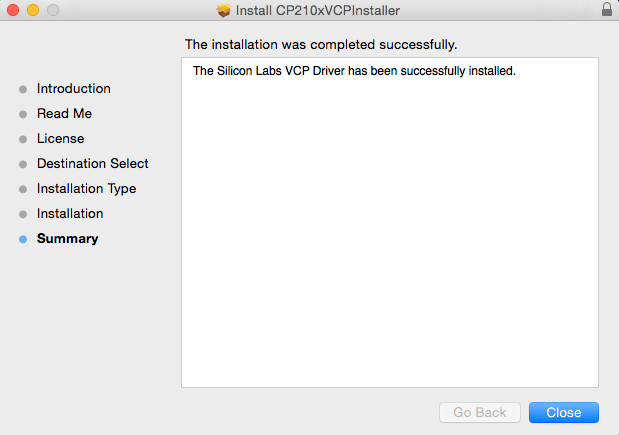
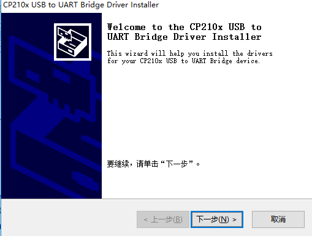
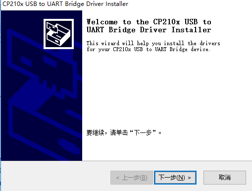

Establish Serial Connection¶
This section provides guidance how to establish serial connection between your board and PC.
For MacOS¶
1. Install the USB driver¶
Download the SiLabs CP2104 Driver
As the disk image SiLabsUSBDriverDisk.dmg is downloaded, mount it. Proceed according to the instructions OK.


 

 

2. Check port on MacOS¶
To check the device name for the serial port of your your board board (or external converter dongle), open terminal and run this command two times, first with the board / dongle unplugged, then with plugged in. The port which appears the second time is the one you need:
MacOS
ls /dev/cu.*
For Windows¶
1.Install the USB driver¶
Download the SiLabs CP2104 Driver and choice the version of USB driver according to your windows version(Windows7/8/10).

Choice the right version installer(x64/x86), and install it.
 


2. Check port on Windows¶
Check the list of identified COM ports in the Windows Device Manager. Disconnect your board and connect it back, to verify which port disappears from the list and then shows back again.
Figures below show serial port for M5Stack Core board